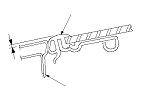
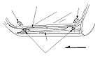

Sunroof Glass Height Adjustment
The roof panel (A) should be even with the glass weatherstrip (B), to within 2+0.5/−1 mm (0.08+0.02/−0.04 in.) all the way around. If not, make the following adjustment:

Remove the bracket cover from each side.
Loosen the nuts (A), and install the shims (B) between the glass frame (C) and glass bracket (D) on each side.
Shim thickness:
Front and rear max. 2 mm (0.08 in.)
If necessary, repeat on the opposite side.
